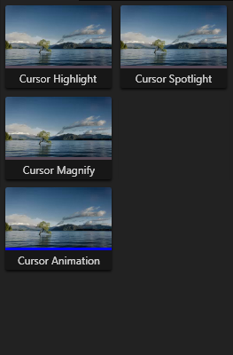
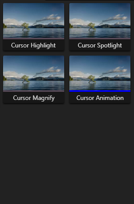
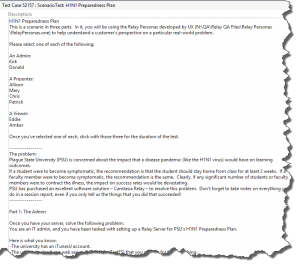

Debugging a Bus Error in Snagit Mac (Using a disassembler & watching registers)
So in Snagit Mac, we have had 9 crashes from the CenterCode Beta (150-odd users), in EditorWindowController.m, `-setCurrentDocument`
Unfortunately, there just wasn't much information about what was causing the crash, all we know is that a Bus Error occurred, and we also have the stack trace at the time of the crashes.
But this seemed really frequent to me, so I decided to dive in and try to figure out what was going on.
Unfortunately, the crash descriptions our users submitted were very different, and didn't really tell us much:
"Snagit crashed after finishing recording a 44 sec video capture (of a youtube video) and waiting for the editor to appear. Received a dialog that snagit crashed and asked if I wanted to reopen the app and report the error (which I am doing right now).""
"Decided to test Snagit Beta, opened Snagit Beta, attempted screen capture, selected with area, selected capture: attempted save, app crashed and snagit quit.
On 1st attempt, this occurred. On 2nd attempt, it happened again, only faster. I'm going to reboot my computer and start over. Thanks . Mary""Attempted to close and reopen editor within Snagit.""
"I believe I was trying to capture a panoramic"
"Simply trying to effectively use the webcam capture mode, and it crashes;""
"Simply opening the editor;""
Here is the stack trace during the crash (Thanks HockeyApp!):
1 2 3 4 5 6 7 8 | 0 libobjc.A.dylib 0x00007fff904ac064 objc_retain + 201 Snagit 0x0000000102032c85 -[EditorWindowController setCurrentDocument:] (EditorWindowController.m:518)2 Foundation 0x00007fff8717fe6b _NSSetObjectValueAndNotify + 2583 Snagit 0x000000010203287b -[EditorWindowController selectTrayItem:shouldDisplay:] (EditorWindowController.m:468)4 Snagit 0x0000000102032548 -[EditorWindowController setDocumentAtIndex:] (EditorWindowController.m:398)5 Snagit 0x0000000102031afd -[EditorWindowController displayEditor] (EditorWindowController.m:223)6 Snagit 0x000000010204d2fd -[AppController showEditor:] (AppController.m:1469)7 Snagit 0x000000010204abc0 -[AppController application:openFile:] (AppController.m:852) |
I personally was unable to reproduce this even once with the same stack trace, but I did find another way to reproduce the crash w/ this stack trace:
01 02 03 04 05 06 07 08 09 10 | 0 libobjc.A.dylib 0x00007fff8caa2064 objc_retain + 201 Snagit 0x000000010f9f7865 -[EditorWindowController setCurrentDocument:] (EditorWindowController.m:518)2 Foundation 0x00007fff95762f3b _NSSetObjectValueAndNotify + 2583 Snagit 0x000000010f9f745b -[EditorWindowController selectTrayItem:shouldDisplay:] (EditorWindowController.m:468)4 Snagit 0x000000010fa49138 -[TrayManager selectTrayItem:shouldDisplay:] (TrayManager.m:380)5 Snagit 0x000000010fa48a6e -[TrayManager documentAdded:shouldSelect:atIndex:] (TrayManager.m:295)6 Snagit 0x000000010f9ff083 -[EditorDocumentController addDocument:shouldSwitch:atIndex:] (EditorDocumentController.m:572)7 AppKit 0x00007fff8b8fab47 -[NSDocumentController openUntitledDocumentAndDisplay:error:] + 3398 Snagit 0x000000010f9f6749 -[EditorWindowController displayEditor] (EditorWindowController.m:229)9 Snagit 0x000000010fa0f706 -[AppController applicationShouldHandleReopen:hasVisibleWindows:] (AppController.m:880) |
For any Snagit Mac users that are curious how to reproduce it the way I did-- simply delete all items inside of your Library. There will be a leftover empty item. Delete that, and Snagit will close. Reopen Snagit and you receive this crash.
During debug you will see that the crash is a EXC_BAD_ACCESS. So normally you would think that we are trying to access an object that has already been released (Thanks ARC!). But the processor in that case would have sent a Segmentation Fault Signal (sigsegv), which it didn't.
The logs say that the crash was caused by a Bus Error:
Exception Type: SIGBUS
Exception Codes: BUS_ADRERR at 0x0
Crashed Thread: 0
So the processor is sending an error to the OS telling it that it is trying to access an invalid physical address.
So what's happening here? How can we debug this? The only information we have right now is what is in the stack trace.
At the moment of the crash, the top stack frame (Frame 0) is this call to `objc_retain
1 | 0 libobjc.A.dylib 0x00007fff904ac064 objc_retain + 20 |
And according to the stack trace, the caller (the previous frame) to objc_retain is -[EditorWindowController setCurrentDocument:].
But let's look at the code here:
01 02 03 04 05 06 07 08 09 10 11 12 13 14 15 16 17 18 19 20 | - (void)setCurrentDocument:(MediaDocument*)document{ if (![document isEqual:[self currentDocument]]) { if ([_editorViewController isLibraryVisible]) { [super setDocument:document]; } else { [self setDocument:document]; } [document didFinishSettingDocument]; }}- (MediaDocument*)currentDocument{ return [self document];} |
Note that in Objective-C, instance variables can have getters and setters automatically generated by denoting a @property variable.
e.g, @property ImageDocument *currentDocument;
And we still have the ability to implement the accessors (getters/setters) ourselves, by writing a method called currentDocument (getter) and setCurrentDocument (setter). So when you try to set a property, the objc runtime will search for the "set*yourpropertyname*" method to see if you have a custom implementation. Otherwise it will just directly set the backing instance variable.
Also to those of you unfamiliar w/ Objective-C and how their memory management (ARC) works, whenever you obtain a reference to an object that you only use in a given scope-- that object will be added to the autorelease pool, which periodically drains automatically (more specifically, at the end of a main run loop). However, if you want to say, set the object as a property on an object, then you will need to `retain` the object, to prevent it from being automatically released before you reference it again.
But when you look at that code, it doesn't seem like it would need to call `-retain` anywhere. Well, turns out, the ARC compiler adds some magical instructions into the assembly code. Let's take a look at the pertinent assembly code produced from Xcode's disassembler.
01 02 03 04 05 06 07 08 09 10 11 12 13 14 15 16 17 18 19 20 21 22 23 24 25 26 27 28 29 30 31 32 33 34 35 | 0x100105dc0 <+0>: pushq %rbp 0x100105dc1 <+1>: movq %rsp, %rbp 0x100105dc4 <+4>: subq $0x40, %rsp 0x100105dc8 <+8>: leaq -0x18(%rbp), %rax 0x100105dcc <+12>: movq %rdi, -0x8(%rbp) 0x100105dd0 <+16>: movq %rsi, -0x10(%rbp) 0x100105dd4 <+20>: movq $0x0, -0x18(%rbp) 0x100105ddc <+28>: movq %rax, %rdi 0x100105ddf <+31>: movq %rdx, %rsi 0x100105de2 <+34>: callq 0x1004a289a ; symbol stub for: objc_storeStrong 0x100105de7 <+39>: movq -0x18(%rbp), %rax 0x100105deb <+43>: movq -0x8(%rbp), %rdx 0x100105def <+47>: movq 0x523ad2(%rip), %rsi ; "currentDocument" 0x100105df6 <+54>: movq %rdx, %rdi 0x100105df9 <+57>: movq %rax, -0x30(%rbp) 0x100105dfd <+61>: callq 0x1004a2834 ; symbol stub for: objc_msgSend 0x100105e02 <+66>: movq %rax, %rdi-> 0x100105e05 <+69>: callq 0x1004a286a ; symbol stub for: objc_retainAutoreleasedReturnValue 0x100105e0a <+74>: movq %rax, %rdx 0x100105e0d <+77>: movq 0x524c6c(%rip), %rsi ; "isEqual:" 0x100105e14 <+84>: movq -0x30(%rbp), %rdi 0x100105e18 <+88>: movq %rax, -0x38(%rbp) 0x100105e1c <+92>: callq 0x1004a2834 ; symbol stub for: objc_msgSend 0x100105e21 <+97>: cmpb $0x0, %al 0x100105e23 <+99>: setne %al 0x100105e26 <+102>: xorb $0x1, %al 0x100105e28 <+104>: movq -0x38(%rbp), %rdx 0x100105e2c <+108>: movq %rdx, %rdi 0x100105e2f <+111>: movb %al, -0x39(%rbp) 0x100105e32 <+114>: callq 0x1004a2852 ; symbol stub for: objc_release 0x100105e37 <+119>: movb -0x39(%rbp), %al 0x100105e3a <+122>: testb $0x1, %al 0x100105e3c <+124>: jne 0x100105e47 ; <+135> at EditorWindowController.m:516 0x100105e42 <+130>: jmp 0x100105ec9 ; <+265> at EditorWindowController.m:524 ... |
The first thing you will notice is that at no point is objc_retain ever called. So we are looking at tail call elimination at work (stack frames get popped as an optimization strategy), and if you're observant you'll notice the method `objc_retainAutoreleasedReturnValue`. It's probably safe to assume, for now, that the `retain` call is being made inside of that function.
And indeed, if we dive into the assembly for `objc_retainAutoreleasedReturnValue`, we find this:
1 2 3 4 5 6 7 8 | libobjc.A.dylib`objc_retainAutoreleasedReturnValue: 0x7fff8caa6fc8 <+0>: movq %gs:0x160, %rax 0x7fff8caa6fd1 <+9>: cmpq %rdi, %rax 0x7fff8caa6fd4 <+12>: je 0x7fff8caa6fdb ; <+19>-> 0x7fff8caa6fd6 <+14>: jmp 0x7fff8caa2050 ; objc_retain 0x7fff8caa6fdb <+19>: movq $0x0, %gs:0x160 0x7fff8caa6fe8 <+32>: movq %rdi, %rax 0x7fff8caa6feb <+35>: retq |
There's the $$$
So our *True* stack trace should look like this:
1 2 3 | 0 libobjc.A.dylib 0x00007fff8caa2064 objc_retain + 20* libobjc.A.dylib 0x00007fff8caaXXXX objc_retainAutoreleasedReturnValue + X1 Snagit 0x000000010f9f7865 -[EditorWindowController setCurrentDocument:] (EditorWindowController.m:518) |
And in fact, if we disassemble the machine code, we see that `objc_retain + 20` is specifically this instruction:
0x7fff8caa2064 <+20>: testb $0x2, 0x20(%rax)
For reference, here is the entire assembly for `objc_retain`:
01 02 03 04 05 06 07 08 09 10 11 12 13 14 15 16 | libobjc.A.dylib`objc_retain: 0x7fff8caa2050 <+0>: xorl %eax, %eax 0x7fff8caa2052 <+2>: testq %rdi, %rdi 0x7fff8caa2055 <+5>: je 0x7fff8caa2060 ; <+16> 0x7fff8caa2057 <+7>: testb $0x1, %dil 0x7fff8caa205b <+11>: je 0x7fff8caa2061 ; <+17> 0x7fff8caa205d <+13>: movq %rdi, %rax 0x7fff8caa2060 <+16>: retq 0x7fff8caa2061 <+17>: movq (%rdi), %rax-> 0x7fff8caa2064 <+20>: testb $0x2, 0x20(%rax) 0x7fff8caa2068 <+24>: je 0x7fff8caa206f ; <+31> 0x7fff8caa206a <+26>: jmp 0x7fff8caba3c4 ; objc_object::sidetable_retain() 0x7fff8caa206f <+31>: leaq -0x143ee59e(%rip), %rax ; SEL_retain 0x7fff8caa2076 <+38>: movq (%rax), %rsi 0x7fff8caa2079 <+41>: jmp 0x7fff8ca9a0c0 ; objc_msgSend ... |
And there it is; when the assembly dereferences the rax register (and for whatever reason, with an 0x20 offset), the SIGBUS is thrown.
Side note, notice that one instruction prior, the rax register had the value of the dereferenced rdi register moved into it
(the instruction `movq (%rdi), %rax` is dereferencing the pointer at %rdi and placing it in %rax).
This can be confirmed by checking out the registers before that instruction is executed:
01 02 03 04 05 06 07 08 09 10 11 12 13 14 15 16 17 18 19 20 21 | -> rax = 0xbaddc0dedeadbead rbx = 0x00006000001c03c0 rcx = 0x0000000000000035 rdx = 0x00006000001c03c0 rdi = 0x00006180001864c0 rsi = 0x00007fff8c0f8bfc "document" rbp = 0x00007fff5fbfe4a0 rsp = 0x00007fff5fbfe468 r8 = 0x000000000000007f r9 = 0x0000600000185bd0 r10 = 0x000000010303f1c0 r11 = 0x0000618000085780 r12 = 0x00006180000857a8 r13 = 0x0000000100558640 @"currentDocument" r14 = 0x00007fff8ca9a0c0 libobjc.A.dylib`objc_msgSend r15 = 0x00000001004f12c2 "setCurrentDocument:" rip = 0x00007fff8caa2064 libobjc.A.dylib`objc_retain + 20 rflags = 0x0000000000000246 cs = 0x000000000000002b fs = 0x0000000000000000 gs = 0x0000000000000000 |
You'll notice immediately that the "address" in the rax register doesn't look normal. I didn't know this prior, but the x86 ISA uses "Canonical Addresses". So virtual addresses don't use all 64 bits of address space, they actually only use 48 of the least significant bits.
That's why valid addresses normally look like 0x0000123412341234 or 0xFFFF823412341234. Note that the most significant 16 bits repeat the 48th significant bit
So it's pretty clear that somehow, some garbage was stored in the rax register, and when `testb` tries to dereference the address at rax, we get the error.
So let's try to figure out where this is happening, and go back to the assembly for `-setCurrentDocument`:
01 02 03 04 05 06 07 08 09 10 11 | ... 0x100105de2 <+34>: callq 0x1004a289a ; symbol stub for: objc_storeStrong 0x100105de7 <+39>: movq -0x18(%rbp), %rax 0x100105deb <+43>: movq -0x8(%rbp), %rdx 0x100105def <+47>: movq 0x523ad2(%rip), %rsi ; "currentDocument" 0x100105df6 <+54>: movq %rdx, %rdi 0x100105df9 <+57>: movq %rax, -0x30(%rbp) 0x100105dfd <+61>: callq 0x1004a2834 ; symbol stub for: objc_msgSend 0x100105e02 <+66>: movq %rax, %rdi-> 0x100105e05 <+69>: callq 0x1004a286a ; symbol stub for: objc_retainAutoreleasedReturnValue ... |
if we check out the value of rax before the objc_msgsend (which is where we fetch the `currentDocument` to pass as an argument to `-isEqual`), We have:
rax = 0x0000608000182560
and if we view the object at this location in memory (by using the lldb command, `po`, which stands for "print object"), we get this:
01 02 03 04 05 06 07 08 09 10 11 | po 0x0000608000182560-> <ImageDocument: 0x608000181fb0> fileURL = file:///Users/mattao/Documents/Snagit/Autosaved%20Captures.localized/2015-08-25_17-49-27.snagproj canvasRect = {{0, 0}, {500, 440}} backgroundSize = {0, 0} backgroundColor = NSCalibratedWhiteColorSpace 0 0 objects = ( ) flattenedObjects = ( ) |
This is actually the `document` argument that is passed into `-setCurrentDocument`. It was placed in the `rax` register from the `objc_storeStrong` call.
01 02 03 04 05 06 07 08 09 10 11 12 13 14 15 16 17 18 19 20 21 | rax = 0x0000608000182560 rbx = 0x00006080001c02d0 rcx = 0x0000000000000035 rdx = 0x00006080001c02d0 rdi = 0x00006080001c02d0 rsi = 0x00007fff8c12884b "currentDocument" rbp = 0x00007fff5fbfe4f0 rsp = 0x00007fff5fbfe4b0 r8 = 0x000000000000007f r9 = 0x0000608000182560 r10 = 0x0000000102860c50 r11 = 0x0000000100641918 (void *)0x00000001006418f0: EditorWindowController r12 = 0x00006100000850c8 r13 = 0x0000000100558640 @"currentDocument" r14 = 0x00007fff8ca9a0c0 libobjc.A.dylib`objc_msgSend r15 = 0x00000001004f1302 "setCurrentDocument:" rip = 0x0000000100105e49 Snagit`-[EditorWindowController setCurrentDocument:] + 57 at EditorWindowController.m:514rflags = 0x0000000000000246 cs = 0x000000000000002b fs = 0x0000000000000000 gs = 0x0000000000000000 |
If we look at the other registers at this point, we can see clearly what method is going to be called w/ `objc_msgSend`.
`rsi` is the selector (the method; more specifically, an accessor [more specifically, a getter]), currentDocument,
and `rdi` is the receiver, the `EditorWindowController`
The returned value will be placed in the rax register. We are expecting currentDocument (which if you look up at the source code is actually just a wrapper for `[self document]`)
So... let's take a look at the registers after the `objc_msgSend`
01 02 03 04 05 06 07 08 09 10 11 12 13 14 15 16 17 18 19 20 21 | rax = 0x0000618000183dc0 rbx = 0x00006080001c02d0 rcx = 0x0000000000000035 rdx = 0x00006080001c02d0 rdi = 0x00006080001c02d0 rsi = 0x00007fff8c0f8bfc "document" rbp = 0x00007fff5fbfe4f0 rsp = 0x00007fff5fbfe4b0 r8 = 0x000000000000007f r9 = 0x0000608000182560 r10 = 0x0000000102115fc0 r11 = 0x00006100000850a0 r12 = 0x00006100000850c8 r13 = 0x0000000100558640 @"currentDocument" r14 = 0x00007fff8ca9a0c0 libobjc.A.dylib`objc_msgSend r15 = 0x00000001004f1302 "setCurrentDocument:" rip = 0x0000000100105e52 Snagit`-[EditorWindowController setCurrentDocument:] + 66 at EditorWindowController.m:514rflags = 0x0000000000000206 cs = 0x000000000000002b fs = 0x0000000000000000 gs = 0x0000000000000000 |
rax has changed now, and if we look at the object that this address (0x0000618000183dc0) is pointing at, we get this:
1 2 3 | (lldb) po 0x0000618000183dc0-> 107202385296832 |
So what gives?
The pointer we are getting back from [self currentDocument] appears to not be pointing to a valid object anymore.
This one had me stuck for a while, but I eventually figured out that when you `po` an address that doesn't point to an NSObject, for *whatever* reason, it prints out the decimal representation of the address...
Surprisingly very confusing at first, I thought that number was just gibberish; but in fact (hexadecimal) 0x0000618000183dc0 <-> (decimal) 107202385296832
So okay that helps, I can now just check out the data at address 0x0000618000183dc0 to see what's there. Let's take a look at the first word at that address by using the Xcode Memory Browser:
AD BE AD DE DE C0 DD BA.
Xcode memory browser displays bytes in reverse order, so the first word we have here is actually BADDC0DEDEADBEAD.
Notice something? That is exactly the value that was stored in the rax register when we dereferenced.
So what is this?
Turns out, every NSObject has a hidden property called `isa`, which actually stands for "is a". This points to a `Class` object that is primarily used to tell you the name of the class.
This `isa` pointer property is the first word in the allocated space in memory for the object.
Great, we're in business now. This bus error appears to happen because we are trying to dereference a location in memory, looking for the value backed by the `isa` pointer.
But when it tries to dereference 0xBADDC0DEDEADBEAD, the processor throws a bus error because this is not a valid physical address (not canonical, which is also why the original SIGBUS reported an address of 0x0, because non-canonical addresses get signaled as 0x0 [well technically, it's undefined, but anecdotally it will be 0x0])
And this is perfect, because we can easily find resources as to why `isa` could be invalid.
As it turns out, when a object is released and marked as dead, the `isa` pointer is changed.
So now we have a very clear story of what's happening.
- The `[self currentDocument]` returns the `document` pointer
- We are reading the object referenced by `document`, in order to compare it with `isEqual`
- We successfully read an object, but crash upon trying to retain the object (the object would have been released after the comparison, if you look at instruction offset +114)
- We know this is because we are trying to dereference the `isa` pointer, which is garbage
- The `isa` pointer is garbage because the object has been released, and the `isa` value has been changed to reflect that while the object is still in memory, it is no longer alive.
- This means that the object was valid when we tried to read it, but had already been released when we tried to retain it
- So somewhere, a concurrent setter on the `document` is being called, possibly changing the type (because we subclass NSDocument w/ different children, this is definitely plausible)
- This releases the original `document` object that was read.
So how can we fix this?
The first thing that I thought of was to make the `@property` atomic, which in theory would work-- except that we don't actually have access to the underlying `document` @property-- it exists through the Cocoa API under the `NSWindowController` class that we are inheriting. Alternatively, we could make `currentDocument` an atomic @property, instead of wrapper accessor methods to `document`, but this seems silly because we would be retaining a property whose getter/setter go directly to another property.
Then the worst thing happened. I finally noticed that inside of `-setCurrentDocument`, we are calling `[self setDocument]`...
It couldn't be...
Yep, we already are overriding the setter for `document`
01 02 03 04 05 06 07 08 09 10 11 12 13 14 15 16 17 18 19 20 21 22 23 24 25 26 | - (void)setDocument:(NSDocument *)document{ if ( _shouldSetDocument ) { if (document) { [_editorViewController switchToEditorForDocument:(MediaDocument*)document]; } [self willChangeValueForKey:@"currentDocument"]; [self willChangeValueForKey:@"canSelectNextDocument"]; [self willChangeValueForKey:@"canSelectPreviousDocument"]; [self willChangeValueForKey:@"isVideoMode"]; [super setDocument:document]; [self updateWindowWithDocument:(MediaDocument*)document]; [self didChangeValueForKey:@"currentDocument"]; [self didChangeValueForKey:@"canSelectNextDocument"]; [self didChangeValueForKey:@"canSelectPreviousDocument"]; [self didChangeValueForKey:@"isVideoMode"]; if ( [self isVideoMode] ) { [_buttonBarController setExpanded:NO]; } }} |
So setCurrentDocument doesn't even wrap the `NSWindowController`s `-setDocument`, it wraps our `EditorWindowController`s `-setDocument`.
So now things become a little more clear.
There are places where we calling `[EditorWindowController setDocument:imageDocument]` and places where we are calling `[EditorWindowController setCurrentDocument:videoDocument]`, etc. etc.
It appears that `setCurrentDocument` serves no purpose.
If we look at the blame, here is the commit message when the method was added:
Anon Dev, July 29, 2009:
Merging singlewindowmultidocument branch with trunk
ci
So... yeah.
I moved the `[document didFinishSettingDocument];` call inside of `-setCurrentDocument` into `-setDocument`
Then deleted `-setCurrentDocument`, and rerouted all previous calls to that method to `-setDocument`.
Now I am unable to reproduce the bug with my own testing. It is entirely possible that it is still reproducable, because I was never able to reproduce it the same way our users were-- but I am pretty satisfied with my results.
Does anybody have an experience similar to this, or have anything they could add?
Composite Collections in WPF – Combining different types into one view.
So let's say, hypothetically, you're creating video editing software, and you have a list of effects you want to show up in a tool panel that the user can apply. You make a fancy C# view model and come up with an ObservableCollection<ToolPanelEffectControlViewModel>() to hold them all in. You switch into XAML, your favorite, and toss in an ItemsControl, something like:
01 02 03 04 05 06 07 08 09 10 11 12 | <ItemsControl ItemsSource="{Binding Path=ToolPanelEffectsManager.EffectsCollection, Mode=OneWay}"> <ItemsControl.Resources> <DataTemplate> <ToolPanelControls:EffectControl EffectType="{Binding EffectType}" /> </DataTemplate> </ItemsControl.Resources> <ItemsControl.ItemsPanel> <ItemsPanelTemplate> <WrapPanel Background="Transparent" /> </ItemsPanelTemplate>; </ItemsControl.ItemsPanel></ItemsControl> |
Awesome. Looks great. Here comes trouble, though: now you need to add an AnimationControl into the mix. The easy solution is to make a new ItemsControl, but now you've got two WrapPanels instead of one, which is bad news if you have UX people:

What you really want is a way to have one ItemsControl be populated by more than one data source. Enter: Composite Collections. Rather than use ItemsSource as a property, make it a new tag:
1 2 3 4 5 6 | <ItemsControl.ItemsSource> <CompositeCollection> <CollectionContainer Collection="{Binding Path=ToolPanelEffectsManager.EffectsCollection, Mode=OneWay}" /> <CollectionContainer Collection="{Binding Path=ToolPanelEffectsManager.AnimationsCollection, Mode=OneWay}" /> </CompositeCollection></ItemsControl.ItemsSource> |
There are just two problems with this so far:
- I lied a bit, sorry. The CompositeCollection doesn't actually have access to the DataContext, so we need to be a bit more clever than just binding the Collection property.
- We want these to use different templates.
The first fix is pretty easy, just define some resources to use as a sort of proxy or bridge for the data:
1 2 3 4 | <Window.Resources> <CollectionViewSource x:Key="EffectsBridge" Source="{Binding Path=ToolPanelEffectsManager.EffectsCollection, Mode=OneWay}" /> <CollectionViewSource x:Key="AnimationsBridge" Source="{Binding Path=ToolPanelEffectsManager.AnimationsCollection, Mode=OneWay}" /></Window.Resources> |
...and bind your CollectionContainers to the new keys:
1 2 | <CollectionContainer Collection="{Binding Source={StaticResource EffectsBridge}}" /><CollectionContainer Collection="{Binding Source={StaticResource AnimationsBridge}}" /> |
Bam. That takes care of our first issue. The second fix is even easier: DataTemplates can have a DataType property defined to tell WPF what they should be used for.
1 2 3 4 5 6 | <DataTemplate DataType="{x:Type local:ToolPanelEffectControlViewModel}"> <ToolPanelControls:EffectControl EffectType="{Binding EffectType}" /></DataTemplate><DataTemplate DataType="{x:Type local:ToolPanelAnimationControlViewModel}"> <ToolPanelControls:AnimationControl AnimationType="{Binding AnimationType}" /></DataTemplate> |
Now each template will be used for the type specified. It's important to note that using ItemsControl.ItemTemplate won't work here, because you can only have one template in there, but putting them into ItemsControl.Resources works just fine. Putting it all together, we get something like this:
01 02 03 04 05 06 07 08 09 10 11 12 13 14 15 16 17 18 19 20 21 22 23 24 25 | <Window.Resources> <CollectionViewSource x:Key="EffectsBridge" Source="{Binding Path=ToolPanelEffectsManager.EffectsCollection, Mode=OneWay}" /> <CollectionViewSource x:Key="AnimationsBridge" Source="{Binding Path=ToolPanelEffectsManager.AnimationsCollection, Mode=OneWay}" /></Window.Resources><ItemsControl> <ItemsControl.ItemsSource> <CompositeCollection> <CollectionContainer Collection="{Binding Source={StaticResourceEffectsBridge}}" /> <CollectionContainer Collection="{Binding Source={StaticResource AnimationsBridge}}" /> </CompositeCollection> </ItemsControl.ItemsSource> <ItemsControl.Resources> <DataTemplate DataType="{x:Type local:ToolPanelEffectControlViewModel}"> <ToolPanelControls:EffectControl EffectType="{Binding EffectType}" /> </DataTemplate> <DataTemplate DataType="{x:Type local:ToolPanelAnimationControlViewModel}"> <ToolPanelControls:AnimationControl AnimationType="{Binding AnimationType}" /> </DataTemplate> </ItemsControl.Resources> <ItemsControl.ItemsPanel> <ItemsPanelTemplate> <WrapPanel Background="Transparent" /> </ItemsPanelTemplate> </ItemsControl.ItemsPanel></ItemsControl> |

It's also worth mentioning that you can put raw elements into your CompositeCollection as well. For instance, if you only had one AnimationControl, you could do this:
01 02 03 04 05 06 07 08 09 10 11 12 13 14 15 16 17 18 19 20 21 | <Window.Resources> <CollectionViewSource x:Key="EffectsBridge" Source="{Binding Path=ToolPanelEffectsManager.EffectsCollection, Mode=OneWay}" /></Window.Resources><ItemsControl> <ItemsControl.ItemsSource> <CompositeCollection> <CollectionContainer Collection="{Binding Source={StaticResourceEffectsBridge}}" /> <ToolPanelControls:AnimationControl AnimationType="{StaticResource AnimationName}" /> </CompositeCollection> </ItemsControl.ItemsSource> <ItemsControl.Resources> <DataTemplate DataType="{x:Type local:ToolPanelEffectControlViewModel}"> <ToolPanelControls:EffectControl EffectType="{Binding EffectType}" /> </DataTemplate> </ItemsControl.Resources> <ItemsControl.ItemsPanel> <ItemsPanelTemplate> <WrapPanel Background="Transparent" /> </ItemsPanelTemplate> </ItemsControl.ItemsPanel></ItemsControl> |
...and the WrapPanel will include everything in the collection. Pretty simple!
Constexpr Strings
If you wanted to have an array of characters in a header file you might have tried doing it as follows:
1 2 3 4 5 6 | #pragma oncenamespace Constants{ extern const char* g_strExample = "ExampleString";}//... |
Only this header file gets included from several source files and thus will be defined in multiple translation units giving the linker error:
"error LNK2005... Constants::g_strExample already defined in Blah.obj"
Of course you can fix this by making the header just declare the string and have the actual definition be in one of the source files. Often we use the approach of a simple macro; for example:
1 | #define EXAMPLE_STRING "ExampleString" |
With Visual Studio 2015 you could use constexpr in your header file such that the following will work:
1 2 3 4 5 6 | #pragma oncenamespace Constants{ constexpr const char* g_strExample = "ExampleString";}//... |
The constexpr specifier declares that it is possible to evaluate the value at compile time. There are lots of applications where constexpr changes things and this is just one of them. Will you be using constexpr in your projects? Do you have a decent understanding on constexpr? Let me know what you think!
Exception Filters
New in C# 6.0 is something called Exception Filters. With Visual Studio 2015 you can use this feature. To understand them consider this small code sample:
1 2 3 4 5 6 7 8 | try{ throw new MyException();}catch (MyException ex) when(ex.m_nCount >= 5){} |
Notice how to the right of the catch is a little extra? We'll call that the filter. The exception isn't caught on the catch if the filter evaluates to false.
Why would you use this? It might increase the readability of your code. It is suppose to make it clear what is caught and when. As you already know you can catch an exception and if you can't do anything with it you might rethrow the exception to some other catch to handle. But because the exception was already caught rethrowing the exception won't hit any of the remaining catch statements so you'd need to nest your try-catches or something similar. Whereas with Exception Filters the exception isn't caught unless the filter is true.
So what can go in the filters? For fun I called a public static method that returns a bool and it worked:
1 2 3 4 5 6 7 8 | try{ throw new MyException();}catch (MyException ex) when(SomeClass.IncrementCounter()){} |
And just for fun I decided to find out what would happen if I threw a different exception in the method that is my filter is calling. To my shock it took the filter as false and went to the next catch. I could see somebody adding logging or something with those catch filters and if for some reason something serious happens and its exception just disappears is a tad disappointing. If you understand why let me know!
Nonetheless I changed the target .Net framework version to 4.0 and this feature worked fine as I could tell. So it probably is just a compiler feature. Will you be using this feature in your product in the future? Let me know what you think!
Designing software for customers (as opposed to individual users)
At this morning's Monday Morning Meeting, Bill H mentioned that, in designing for enterprise customers, TechSmith is delving into brand new territory and doing something we've never tried before. That is... not strictly true: TechSmith Relay (née Camtasia Relay) has always been designed with enterprise customers in mind. Whether or not we've succeeded in meeting our customers' needs, we have found a couple of useful techniques for considering the various customer tiers in an enterprise situation during design, development, and testing.
Technique: Develop Customer Personas
{kind=link}
Early in the development process (roundabout Camtasia Relay 1.1 or 1.2, so, circa 2009?) the entire team met with UX for a 2-day workshop, led by Casey Wright, where we developed Customer Personas for the various roles within an organization. During that discussion - which was a collaboration between customer-facing people from Sales, Product Management, development/QA, and UX - we determined that we were interested in three types of customer persona, which we roughly referred to as Admins, Presenters, and Viewers. Within those types, we identified a few different personas. (Preserved for posterity here.)
It's worth mentioning that those categories may still be useful for other products thinking about the enterprise space.
Technique: Discuss New Work in Terms of the Personas it Affects
Once we had the personas in place, we were able to leverage them while discussing our work. At first, we tried using Agile-style user stories with the personas as characters in those stories. That didn't work out too well for us... I'm not convinced it's a bad technique, but we certainly didn't do the work to get good at it, and we eventually dropped user stories. However, what did stick was the shorthand language that the personas provided. For example, it was useful for us to encapsulate "engaged administrator with lots of free time and a budget" ("Donald") vs. "disengaged adminstrator who admins lots of IT products and doesn't care about Relay." ("Kirk.") When discussing a new feature, saying "This is for Mary," or "This is for Chris; we don't expect Mary to use it," was a helpful way to aid in discussions between designers, developers, and testers.
If your team discusses features in terms of acceptance criteria, the common Gherkin format provides a nice opportunity to add persona sauce: instead of blandly saying "as an admin," say "as Kirk," as an example (or whatever name your persona analysis provided).
Technique: Use Persona-based Scenario Tests During Team-wide Acceptance Testing

One of my favorite techniques for assessing the quality of a product at acceptance-testing time (that is, when a feature is supposedly "done") is to design a scenario test that exercises the new feature by having people use the way we hoped users would. Personas are useful during this activity: if the central challenge of creating a useful scenario test is to create scenarios that are "credible and motivating," personas carry you a long ways toward that goal: the team already has some agreement on the users we care about, and we already understand what those users' needs and biases are, so the test scenario doesn't need to describe that from scratch. All that's needed is a description of the problem, the persona experiencing that problem, and your software. Pretend you're that person using this software to solve that problem.
{kind=link}
We found this activity to be productive, both in terms of bugfinding and in terms of generating UX feedback that could be acted upon in the next iteration. It creates a valuable discussion and helps the team understand the product in terms of how its users will perceive it.
Customers vs. Users
In Bill's comments this morning, he mentioned that we - as an organization - are experienced at designing for users, but less experienced at designing for customers. These techniques can be helpful in bringing those non-user customers into your team's discussions.
Please share your comments on Flowdock!
Adjust Browser Helper Object’s User Agent String
Web pages can be responsive to work in browsers of different sizes. This is important with the multitude of different screen sizes across phones, tables, desktop, game consoles, TVs and even wearables. But what would you do if you need to use a web page that doesn't work within the size you desire?
In my case I had put the web page in the production wizard of Camtasia Studio and it looked similar to the following:
{kind=link}
Perhaps someday the web page will be updated and would fit nicely but for now I needed to try something. I adjusted the user agent string of my web browser control. This made it so the web site served up a different page because it now thinks I was on a different browser/device than I was actually using. This did make it so I got a web page that displayed much better:
{kind=link}
There are several downsides to doing this. It can hurt the tracking on the website since it's tracking may report more mobile devices than actually are connecting. It is also quite possible that the website might update and mention things very specific to mobile devices or something that is confusing to the users.
Nonetheless I'd like to share how I adjusted the user agent string. In the window (property page) that holds the browser helper object you can just override OnAmbientProperty like so:
01 02 03 04 05 06 07 08 09 10 11 12 13 14 15 | BOOL CMyLoginDlg::OnAmbientProperty(COleControlSite* pSite, DISPID dispid, VARIANT* pvar){ if (dispid == DISPID_AMBIENT_USERAGENT) { CString strUserAgent(NEVER_TRANSLATEA("Mozilla/5.0 (iPhone; CPU iPhone OS 7_0 like Mac OS X) AppleWebKit/537.51.1 (KHTML, like Gecko) Mobile/11A465")); pvar->vt = VT_BSTR; pvar->bstrVal = strUserAgent.AllocSysString(); return TRUE; } return __super::OnAmbientProperty(pSite, dispid, pvar);} |
In the end I decided not to use this and went with a different approach. Have you ever did anything with a user agent string? Had you ever supplied an interesting user agent string in a web request? Let me know what you think!
SharePoint Development Experiences Blog
As we continue to work with SharePoint Online and Office 365 to develop content, we've started creating a record of lessons learned and gotcha's. You can find the blog posts about our findings and experiences here: https://offtechsmith.sharepoint.com/sites/development/SPDevResearch
Google Chrome Tips & Tricks
Below is a video/demo of a quick run through of how I use google chrome and some things I find really handy about it. I go over a few specific things that come in handy with working remote like using a combination of google voice, google hangouts, and some extensions to help manage communication with fellow employees. I hope you find it helpful.
Direct link http://www.screencast.com/t/ByATP5SOJ
Random Comand-line Workflow Optimizations
Here is a random list of things I do or have done to improve productivity when working via the command-line.
Bash Completion
Command line is the best, but it can also be tedious and provide a tough learning curve for new tools. Having bash completion for those tools can help a ton. For those that don't know what bash completion is, it's the thing where when you hit tab on the command line and it lists out the available options or auto completes the option for you if there is only one choice. Where I have found this particularly useful is installing bash completion for git! It does not come installed by default on most machines or with an install of git. For Cygwin, you can install it be selecting the git-completion package under Devel. For the mac side, you can either use "brew" to install it for you, or find online the .bash file and install it somewhere handy. I put it under a local bin folder. And then you update your .profile to include something like this...
1 2 3 | if [ -f ~/bin/git-completion.bash ]; then . ~/bin/git-completion.bashfi |
I found a handy bash file here https://github.com/git/git/blob/master/contrib/completion/git-completion.bash
Aliases
If you aren't using aliases, then you are probably wasting a lot of typing tedious typing time. Here are some of my favorites
Cygwin Aliases
Add these to your .profile or .bashrc file
01 02 03 04 05 06 07 08 09 10 11 12 | #shortcut to open applications in non-command line editorsalias np='/cygdrive/c/Program\ Files\ \(x86\)/Notepad++/notepad++.exe'# cd shortcut to your base git directoryalias cdgit='cd /cygdrive/d/proj/git'# cd to any projects you work in a lot.alias cdcsml='cd /cygdrive/d/proj/git/csml'# open up the file explorer to your current working directory# similar to "open ." in the mac terminalalias opendir='cygstart.exe --explore "${1:-.}"' |
Git Alias
Add these to ~/.gitconfig
1 2 3 4 5 6 7 | [alias] lga = log --oneline --graph --decorate --color --all lg = log --oneline --graph --decorate --color st = status fa = fetch --all co = checkout diffs = diff --staged |
Cygwin Admin Hack
Cygwin doesn't have a sudo option, which is annoying since I use it all the time on the mac side. So instead I use a work around that will open up another cygwin instance as administrator and run whatever command I give it. To do this, simply create a "sudo" txt file in one of the many exported bin folders, make sure it has executable rights (so you might need to chmod it), and set it up do this:
1 2 | #!/usr/bin/bashcygstart --action=runas "$@" |
Useful Git Commands
I am also making use of my aliases
01 02 03 04 05 06 07 08 09 10 11 12 13 14 | # Create and checkout a new branchgit co -u nameOfBranch# Wipe out local changesgit reset HEAD --hardgit submodule foreach --recursive git reset --hard# Cleanup your copy of origin and remove branches you've checked out that have since been deletedgit remove prune origingit branch -d nameOfBranchToDelete# When you run into pains with submodules because the location changedgit submodule syncgit submodule update --init --recursive |
What kind of command line optimizations do other people use?
Recent Posts
- Debugging a Bus Error in Snagit Mac (Using a disassembler & watching registers)
- Composite Collections in WPF – Combining different types into one view.
- Constexpr Strings
- Exception Filters
- Designing software for customers (as opposed to individual users)
Categories
Tags
Meta
- Log out
- Dashboard
- Entries RSS
- Comments RSS
Welcome, Matthew Ao
Blogroll
Authors
A.J. Orians (182)
- Stephen Wagner (57)
Mark Schall (49)
- a.marks (37)
- Dennis (36)
- David Girdwood (33)
- Randall (33)
- Jared Wein (30)
- d.fiedler (26)
Glenn H (24)
Commentators of the month
- Be the first to comment.